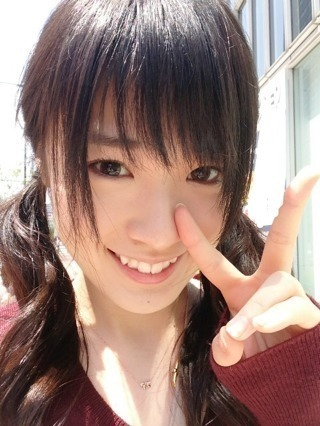

2013/0429Mon（´-`）.｡oO(か ずみん×165
こんばんは＊
いつも応援ありがとうございます！
今日で5thの握手会は終了(>_<)！
横浜の握手会へ来てくださった
みなさん、ありがとうございました♪
しばらく握手会はないので
みなさんには直接会えません(T_T)
悲しいけどちゃんと
覚えておくからね♪♪
また会いに来てください...☆

次まで待てない人は
エアー握手(*∩ω∩) ！
--------
ほいだら、
明日からまたプリンシパル稽古だ！
私はじょーさんの演技が好きです。
見ていると『ルンパ♪ルンルン♪ワォ!』
って感じの気分になれます(*ﾟﾛﾟ)!!

ジョーズwith後ろのピンクちゃん達。
さぁ、頑張るぞ〜！！
------
最後に。
美雲ちゃん、お疲れ様でした。
美雲ちゃんはずっと笑顔だったのに
私の方が泣いちゃってごめんね。
また6月に...(^^)

大好き(T_T)♡♡♡♡
それでは、おやすみなさい...★
2013/0428Sun（´-`）.｡oO(か ずみん×164
いつも応援ありがとうございます！
前回のツインの写メ、
直射日光のおかげか、
コメントを見たら好評なようで
嬉しかったです( *´艸｀)
今日は伝えてピカッチの放送日
でした∑(ﾟДﾟ)
レッスン終わってケータイ見たら
剣道の先生からメール来てて...
さっき気づいた((((；ﾟДﾟ)))))))
すみません(T_T)
まだOAは見てませんが、
以前上手く喋れなくて謝ってたのは
この番組でした...
でも勉強になったよ(*ﾟﾛﾟ)!!
共演者のみなさん、
すごく個性が強くて優しくて^ ^
特にダレノガレさんは可愛くて
面白くて優しくて、気さくで、
すっごく憧れました( ∩ˇωˇ∩)
私ももっと頑張るぞ！！
---------
今日は稽古前に日比谷公園での
イベントに参加させていただきました！
やっぱ歌とダンスは楽しい！
来てくださったみなさん、
ありがとうございました( ´ ▽ ` )ﾉ
今日も一日お疲れ様でした＊
私も頑張るから、
みなさんも...
みなさんに幸せが訪れますように！
それでは、また(*^_^*)
わいわい♪
みんながいるから頑張れる！
おやすみなさい...☆
2013/0426Fri（´-`）.｡oO(か ずみん×163
いつも応援ありがとうございます！
プリンシパルに向けて
毎日寝る前もちょっと惜しんで、笑
頑張ってます！！
2幕、去年は不思議の国のアリスを
やりましたね〜
今年はまた、もちろん別の物をやるの
ですが、1つすごーーーく自分に
似ているというか、魅力的な
役があるんですよ。
ちょっと脇役なんですけど(σ´∀｀)σ
その役を練習してから、
稽古がすっごく楽しい( *´艸｀)♪
というかその役しか練習してない！
皆勤賞！
ただ2幕だから...
練習しても、いくら極めても
本番で選ばれなかったら...(T_T)うう
辛いなぁ。
だから今日から違う役も練習します！
今から行ってきやす！
毎日稽古だからネタがないんだよな〜
ただ趣味とかしてる暇あったら
稽古したいから、しょうがないの
ですね...(´-ω-`)
内容薄くてごめんなさい(T_T)
明日からGWとニュースで
言ってたのですが、
私には無縁だーーー！
毎日頑張るぞ！！
どうか応援してください(σ´∀｀)σ
みなさんも毎日を楽しんで♡
それではまた。

2013/0423Tue（´-`）.｡oO(か ずみん×162
みなさん、沢山のコメント
ありがとうごさいました(T_T)♡
全部読ませていただきました。
中には他のメンバー推しの方も...
嬉しかった(T_T)
皆さんの優しさに感動しました。
こんなに沢山の人に
祝福してもらった選抜発表は
初めてです。
頑張るぞ〜！！
自分のためじゃなくて
みんなのために( ∩ˇωˇ∩)
------
今日もプリンシパルの稽古です！
毎日昼から
休みなしです〜(T_T)
タイツが沢山破れてしまって、
でも新しいのが買えなくて、
今困ってます(´-ω-`)笑
昨日はすごいハード
スケジュールだったなぁ...
今は稽古場までの移動中！
みなさんに
どうしても言わなきゃと思って！
今日発売のUTB!!!!!
アップトゥーボーイさん!!!!
高山の初グラビアが
載っています(σ´∀｀)σ
テーマはレトロ！
私も朝本屋さんでサッと見たのですが...
大人っぽかった(*ﾟﾛﾟ)!!
眉毛下げるの禁止だったので、笑
キリ顏多いです〜♪
ぜひチェックしてみてください！
それでは、
短いですが、この辺で(｀･ω･´)b
今日も頑張るぞ〜！！
一緒に頑張りましょう〜♪
では( ´ ▽ ` )ﾉ


↑足短く見える。笑笑
2013/0421Sun（´-`）.｡oO(か ずみん×161
今日は京都で全国握手会でした^ ^
来てくださった皆様、
ありがとうございました！
今日は美雲ちゃんと一緒( ∩ˇωˇ∩)
美雲ちゃんのファンのみなさん、
もちろん私のファンのみなさん、
みんな優しくて楽しかったです♪♪
ありがとうございました！
------
そして。
選抜発表もありました
6thシングルで、私は八福神に
戻ることができました(T_T)
まずは、様々な方々へ感謝します。
ありがとうございます！
思う事は沢山あります。
実はなんどもブログを書いては消し、
書き直しては消し、を
繰り返していました。
4thあたりから八福に選ばれたいと
思ってはいたのですが、、
まさか本当に戻れる日がくるとは...
ありがたや〜(T_T)
選抜発表の時、いつも以上に
びっくりしていて
いざ名前を呼ばれると
頭が真っ白になりました...
多分まともなこと喋れなかった...
(いや、いつもまともに喋れてないか。)
収録後にじわじわ来ましたね...。
スタッフさんやメンバーが
おめでとうと言ってくれて、
みんなの優しさが嬉しかったです。
楽屋に戻ったら
さゆにゃんやみなみや
まいまい、生駒ちゃんがいて、
すごく喜んでくれて。
思わず涙が溢れました。
みんなありがとう。
頑張らなきゃなって心から思ったよ。
ファンの皆さん、
喜んで...くださってますか？
一緒に頑張ってくれて、
ありがとうございました。
いつか八福神に戻れると
背中を押してくれて
ありがとうございました！
みなさんには...これからも...
力を貸していただきたいです。
八福神入ったから安心ではく、
より頑張らなくてはなりません。
不安も沢山出てくると思います。
いくらポジティブでも
たまには挫折もするでしょう(T_T)
高山は人に頼るのが凄く苦手です...
何だか申し訳ない気がして。
でも、今回は頼らせて下さい
私、高山一実がこれからも
前向きに頑張っていけるように、
強く強く、応援してほしいです。
よろしくお願いします！！
前に出ると大変だと思うけど、
立ち位置がまた、なぁちゃんの隣で
安心しました(^ ^)
2人で八福神に入れて、凄く嬉しい！
乃木坂46は33人です。
みんなが頑張ってる中で
せっかくいただけたチャンス。
同じ1期生なのに、その中から
選抜しなければならない制度。
今更だけどこんなの
平和を主義してないよなぁ...
わかっているからこそ、
いただけたチャンスを噛み締めて
無駄にしないように...
頑張ろうと思います！
3列目にいた時、
1つ1つのチャンスに対しての
執着心も学べたし、
それを生かしていけたらなぁと！
これからも、ずーーーーっと
応援よろしくお願いします！
逆に私も応援したくなるような
アイドルになれるように頑張るね！
美意識高く持ちます！
ダンスも歌も磨きます。
前向き上向き強くなれ！
それでは、また^ ^
Special thanks☆
2013/04/21 00:12｜個別ページ｜コメント(1134)